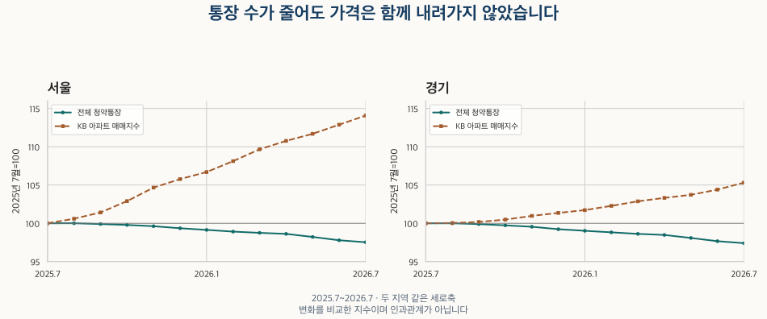

공급과 미분양 · 청약통장의 단위
청약통장 가입자 감소, 서울·경기 집값도 내렸을까?
2025년 7월~2026년 7월 서울·경기 청약통장 네 유형의 월말 계좌 수를 가격·거래량과 비교합니다. 가입자와 잔액, 순감소와 해지, 경쟁률·당첨 판단의 차이를 확인하세요.
분석 기간 · 2025.7~2026.7 · 거래량 끝월 잠정 비교 | 자료 기준일 · KB 2026-10-03 · 청약홈 대조 2026-10-17
“청약통장 가입자가 줄었다”는 기사를 보면 청약 경쟁도 약해지고 집값도 내릴 것 같습니다. 하지만 이 통계가 세는 것은 사람 수가 아니라 월말에 남은 가입 계좌 수입니다. 2025년 7월부터 2026년 7월까지 서울·경기의 네 가지 통장을 모두 합쳐 보고, 같은 기간 아파트 가격·거래량과 비교했습니다.
‘가입자 감소’는 새 가입자가 줄었다는 뜻인가요?
청약홈 통장별 가입현황은 월말 기준의 가입 잔액을 좌 단위로 보여줍니다. 한 달 동안 새로 가입한 사람, 해지한 계좌, 청약을 신청한 사람을 따로 센 값이 아닙니다. 전월보다 1만 좌 줄었더라도 그 달 해지 건수가 정확히 1만 건이었다고 읽을 수 없습니다.
이 글은 주택청약종합저축, 기존 청약저축, 청약부금, 청약예금의 네 유형을 구분합니다. 보유 KB 자료에는 종합저축·부금·예금 세 유형만 있어, 빠진 청약저축을 같은 월의 공식 청약홈 화면에서 별도로 확인했습니다. 세 유형만 더한 값을 전체 청약통장 수로 표시하지 않았습니다.
유형별 감소에도 주의가 필요합니다. KB 공식 안내는 청약예금·부금의 2015년 9월 1일 신규 가입 중단을 설명합니다. 또 하나은행의 2024년 9월 공지는 기존 저축·예금·부금의 종합저축 전환신규 제도를 안내했습니다. 기존 유형이 줄었다고 그만큼 청약을 포기했다고 단정할 수 없습니다. 이번 자료는 실제 전환량을 따로 관측하지 않았습니다.
지역도 공표된 분류 그대로 사용합니다. 그 기준이 가입자의 거주지인지 은행 소재지인지 확인하지 못했으므로 ‘서울에 살면서 서울 청약을 준비하는 사람’의 수로 바꾸어 읽지 않습니다. 전국에는 서울·경기가 포함되어 있어 세 지역을 더하지 않습니다.
서울·경기에서는 어떤 통장이 얼마나 줄었나요?
전체 통장 수는 서울 643만 9,435좌→628만 118좌, 경기 724만 4,142좌→705만 6,086좌로 줄었습니다. 순감소는 각각 15만 9,317좌, 18만 8,056좌입니다. 전국도 2,636만 6,301좌→2,577만 3,825좌로 59만 2,476좌 줄었습니다. 해지 건수나 고유 사람 수가 아닌 잔액의 순변화입니다.
| 지역 | 유형 | 시작 잔액 | 끝 잔액 | 순변화 | 변화율 | 증가한 달 수 |
|---|---|---|---|---|---|---|
| 전국 | 종합저축 | 25,109,868 | 24,663,792 | -446,076 | -1.78% | 1 |
| 전국 | 청약저축 | 314,968 | 289,469 | -25,499 | -8.10% | 0 |
| 전국 | 청약부금 | 132,379 | 118,857 | -13,522 | -10.21% | 0 |
| 전국 | 청약예금 | 809,086 | 701,707 | -107,379 | -13.27% | 0 |
| 전국 | 전체 | 26,366,301 | 25,773,825 | -592,476 | -2.25% | 1 |
| 서울 | 종합저축 | 5,915,290 | 5,814,862 | -100,428 | -1.70% | 1 |
| 서울 | 청약저축 | 138,077 | 126,068 | -12,009 | -8.70% | 0 |
| 서울 | 청약부금 | 58,568 | 52,556 | -6,012 | -10.26% | 0 |
| 서울 | 청약예금 | 327,500 | 286,632 | -40,868 | -12.48% | 0 |
| 서울 | 전체 | 6,439,435 | 6,280,118 | -159,317 | -2.47% | 1 |
| 경기 | 종합저축 | 6,849,447 | 6,707,979 | -141,468 | -2.07% | 1 |
| 경기 | 청약저축 | 81,585 | 74,601 | -6,984 | -8.56% | 0 |
| 경기 | 청약부금 | 33,899 | 30,367 | -3,532 | -10.42% | 0 |
| 경기 | 청약예금 | 279,211 | 243,139 | -36,072 | -12.92% | 0 |
| 경기 | 전체 | 7,244,142 | 7,056,086 | -188,056 | -2.60% | 1 |
기존 청약저축·부금·예금의 감소율은 종합저축보다 컸습니다. 예를 들어 서울은 종합저축 −1.70%, 청약예금 −12.48%입니다. 그러나 출발 규모도 다르고 신규 가입·전환 조건도 같지 않습니다. 작은 기존 유형의 감소율을 전체 청약 수요의 감소율로 대신할 수는 없습니다.
매달 줄어든 것도 아닙니다. 종합저축과 전체 합계는 전국·서울·경기 모두 2025년 8월에 한 번 증가했고, 나머지 11번의 전월 비교에서는 감소했습니다. 기존 청약저축·부금·예금은 세 지역 모두 12번 감소했습니다. 아래 표에는 그 반례를 포함한 13개 월말을 모두 남겼습니다.
| 월 | 종합저축 | 청약저축 | 청약부금 | 청약예금 | 전체 | 전체 전월 차이 |
|---|---|---|---|---|---|---|
| 2025-07 | 25,109,868 | 314,968 | 132,379 | 809,086 | 26,366,301 | — |
| 2025-08 | 25,124,923 | 313,082 | 131,554 | 803,710 | 26,373,269 | 6,968 |
| 2025-09 | 25,115,926 | 309,869 | 130,137 | 794,002 | 26,349,934 | -23,335 |
| 2025-10 | 25,086,796 | 307,980 | 129,353 | 788,864 | 26,312,993 | -36,941 |
| 2025-11 | 25,046,263 | 306,215 | 128,588 | 783,183 | 26,264,249 | -48,744 |
| 2025-12 | 24,978,172 | 304,283 | 127,496 | 774,156 | 26,184,107 | -80,142 |
| 2026-01 | 24,937,771 | 302,258 | 126,466 | 766,257 | 26,132,752 | -51,355 |
| 2026-02 | 24,906,421 | 300,362 | 125,221 | 755,500 | 26,087,504 | -45,248 |
| 2026-03 | 24,887,558 | 298,054 | 123,709 | 742,608 | 26,051,929 | -35,575 |
| 2026-04 | 24,882,824 | 296,025 | 122,166 | 728,484 | 26,029,499 | -22,430 |
| 2026-05 | 24,800,121 | 293,919 | 121,153 | 719,480 | 25,934,673 | -94,826 |
| 2026-06 | 24,710,894 | 291,821 | 120,131 | 711,188 | 25,834,034 | -100,639 |
| 2026-07 | 24,663,792 | 289,469 | 118,857 | 701,707 | 25,773,825 | -60,209 |
| 월 | 종합저축 | 청약저축 | 청약부금 | 청약예금 | 전체 | 전체 전월 차이 |
|---|---|---|---|---|---|---|
| 2025-07 | 5,915,290 | 138,077 | 58,568 | 327,500 | 6,439,435 | — |
| 2025-08 | 5,918,784 | 137,225 | 58,222 | 325,509 | 6,439,740 | 305 |
| 2025-09 | 5,918,245 | 135,612 | 57,566 | 321,628 | 6,433,051 | -6,689 |
| 2025-10 | 5,913,753 | 134,711 | 57,215 | 319,734 | 6,425,413 | -7,638 |
| 2025-11 | 5,906,255 | 133,879 | 56,880 | 317,919 | 6,414,933 | -10,480 |
| 2025-12 | 5,893,709 | 133,005 | 56,415 | 314,671 | 6,397,800 | -17,133 |
| 2026-01 | 5,884,125 | 132,081 | 55,970 | 311,605 | 6,383,781 | -14,019 |
| 2026-02 | 5,875,474 | 131,191 | 55,414 | 307,446 | 6,369,525 | -14,256 |
| 2026-03 | 5,871,582 | 130,070 | 54,758 | 302,603 | 6,359,013 | -10,512 |
| 2026-04 | 5,869,943 | 129,137 | 54,047 | 297,181 | 6,350,308 | -8,705 |
| 2026-05 | 5,849,166 | 128,162 | 53,591 | 293,663 | 6,324,582 | -25,726 |
| 2026-06 | 5,825,995 | 127,154 | 53,141 | 290,353 | 6,296,643 | -27,939 |
| 2026-07 | 5,814,862 | 126,068 | 52,556 | 286,632 | 6,280,118 | -16,525 |
| 월 | 종합저축 | 청약저축 | 청약부금 | 청약예금 | 전체 | 전체 전월 차이 |
|---|---|---|---|---|---|---|
| 2025-07 | 6,849,447 | 81,585 | 33,899 | 279,211 | 7,244,142 | — |
| 2025-08 | 6,852,114 | 81,051 | 33,680 | 277,411 | 7,244,256 | 114 |
| 2025-09 | 6,848,968 | 80,152 | 33,299 | 274,053 | 7,236,472 | -7,784 |
| 2025-10 | 6,839,630 | 79,620 | 33,102 | 272,326 | 7,224,678 | -11,794 |
| 2025-11 | 6,828,783 | 79,142 | 32,906 | 270,620 | 7,211,451 | -13,227 |
| 2025-12 | 6,809,209 | 78,618 | 32,616 | 267,659 | 7,188,102 | -23,349 |
| 2026-01 | 6,797,796 | 78,070 | 32,322 | 264,992 | 7,173,180 | -14,922 |
| 2026-02 | 6,787,642 | 77,551 | 31,985 | 261,361 | 7,158,539 | -14,641 |
| 2026-03 | 6,778,384 | 76,943 | 31,602 | 257,101 | 7,144,030 | -14,509 |
| 2026-04 | 6,773,715 | 76,407 | 31,222 | 252,416 | 7,133,760 | -10,270 |
| 2026-05 | 6,749,165 | 75,834 | 30,966 | 249,310 | 7,105,275 | -28,485 |
| 2026-06 | 6,722,288 | 75,268 | 30,685 | 246,473 | 7,074,714 | -30,561 |
| 2026-07 | 6,707,979 | 74,601 | 30,367 | 243,139 | 7,056,086 | -18,628 |
첫 달과 마지막 달 사이에는 12개월이 있습니다. 13개 관측값이 있다고 13개월간 감소율로 부르지 않습니다. 첫 달의 전월 차이를 비워 둔 것도 이 비교에 필요한 직전 달을 포함하지 않았기 때문입니다.
통장 수가 줄 때 집값과 거래량도 함께 줄었나요?
같은 시작월을 100으로 놓으면 변화 방향을 비교하기 쉽습니다. 다음 그래프의 통장은 네 유형 전체, 가격은 서울·경기 전체의 KB 아파트 매매지수입니다. 원래 단위와 규모가 다른 숫자를 같은 시작점에 맞춘 것으로, 통장 한 좌가 가격에 미치는 효과를 계산한 것은 아닙니다.

서울과 경기의 KB 매매지수는 이 기간 12번 모두 전월보다 상승했습니다. 전체 통장이 감소한 11번에도 가격은 올랐습니다. 따라서 이 기간에는 ‘통장 수가 줄었으니 가격도 내렸을 것’이라는 추론이 맞지 않았습니다.
| 지역 | 지표 | 시작 | 끝 | 변화율 |
|---|---|---|---|---|
| 서울 | KB 매매지수 | 93.73 | 106.91 | +14.07% |
| 서울 | 계약월 거래량(수집 범위) | 4,200 | 5,700 | +35.71% |
| 서울 | 신고월 거래량 | 8,485 | 6,564 | -22.64% |
| 경기 | KB 매매지수 | 98.31 | 103.53 | +5.31% |
| 경기 | 계약월 거래량(수집 범위) | 7,700 | 12,400 | +61.04% |
| 경기 | 신고월 거래량 | 14,633 | 17,040 | +16.45% |
거래량의 답은 지역과 기준월에 따라 달랐습니다. 공식 신고월 아파트 매매 건수는 서울 8,485건→6,564건으로 22.64% 감소, 경기 14,633건→17,040건으로 16.45% 증가했습니다. 반면 이미 공개한 계약월 집계 표시값은 서울 4,200건→5,700건, 수집 경기 7,700건→12,400건입니다.
이 차이를 통계 오류나 신고 지연의 양으로 곧바로 해석하면 안 됩니다. 신고월과 계약월은 사건을 다른 달에 배치합니다. 경기 계약월 자료는 경기도 전체가 아닌 수집 범위이며, 해제·직거래를 포함한 기본 집계를 100건 단위로 반올림한 값입니다. 새 정확 건수를 계산한 것이 아닙니다. 자세한 기준은 KB 거래량과 계약월 실거래 건수의 차이에서 확인할 수 있습니다.
| 월 | 전체 통장(시작=100) | KB 매매지수 | KB 가격(시작=100) | 신고월(건) | 계약월 표시값(건) |
|---|---|---|---|---|---|
| 2025-07 | 100.00 | 93.73 | 100.00 | 8,485 | 4,200 |
| 2025-08 | 100.00 | 94.28 | 100.60 | 4,154 | 4,300 |
| 2025-09 | 99.90 | 95.05 | 101.42 | 6,796 | 8,700 |
| 2025-10 | 99.78 | 96.44 | 102.90 | 11,041 | 8,600 |
| 2025-11 | 99.62 | 98.10 | 104.66 | 4,395 | 3,400 |
| 2025-12 | 99.35 | 99.14 | 105.77 | 4,871 | 4,700 |
| 2026-01 | 99.14 | 100.00 | 106.69 | 5,945 | 5,400 |
| 2026-02 | 98.91 | 101.34 | 108.12 | 5,599 | 5,800 |
| 2026-03 | 98.75 | 102.78 | 109.66 | 6,433 | 5,500 |
| 2026-04 | 98.62 | 103.82 | 110.77 | 7,521 | 8,700 |
| 2026-05 | 98.22 | 104.68 | 111.69 | 8,946 | 8,800 |
| 2026-06 | 97.78 | 105.80 | 112.88 | 7,742 | 5,300 |
| 2026-07* | 97.53 | 106.91 | 114.07 | 6,564 | 5,700 |
| 월 | 전체 통장(시작=100) | KB 매매지수 | KB 가격(시작=100) | 신고월(건) | 계약월 표시값(건) |
|---|---|---|---|---|---|
| 2025-07 | 100.00 | 98.31 | 100.00 | 14,633 | 7,700 |
| 2025-08 | 100.00 | 98.34 | 100.03 | 9,037 | 7,700 |
| 2025-09 | 99.89 | 98.48 | 100.17 | 13,834 | 12,200 |
| 2025-10 | 99.73 | 98.78 | 100.48 | 17,759 | 13,300 |
| 2025-11 | 99.55 | 99.26 | 100.97 | 13,662 | 10,400 |
| 2025-12 | 99.23 | 99.64 | 101.36 | 13,545 | 10,300 |
| 2026-01 | 99.02 | 100.00 | 101.72 | 13,934 | 13,000 |
| 2026-02 | 98.82 | 100.54 | 102.28 | 13,576 | 10,900 |
| 2026-03 | 98.62 | 101.13 | 102.87 | 16,895 | 13,100 |
| 2026-04 | 98.48 | 101.57 | 103.32 | 17,182 | 14,200 |
| 2026-05 | 98.08 | 101.96 | 103.72 | 17,070 | 14,800 |
| 2026-06 | 97.66 | 102.63 | 104.40 | 19,594 | 14,900 |
| 2026-07* | 97.40 | 103.53 | 105.31 | 17,040 | 12,400 |
* 2026년 7월 거래량 비교는 원공개 자료의 잠정 표시를 유지했습니다. 원공개의 완결 비교 종료월은 2026년 6월입니다. 이 표는 처음 정한 통장 관측기간에 맞춘 비교이므로 7월을 포함하되, 끝점의 확정성을 높여 말하지 않습니다. 통장이나 가격의 잠정 여부를 뜻하는 표시도 아닙니다.
“그래도 통장이 줄면 청약 경쟁은 약해지는 것 아닌가요?”
전체 계좌가 줄어드는 현상은 살펴볼 가치가 있습니다. 다만 남아 있는 계좌 중 누가 어떤 단지에 실제 신청하는지는 별개의 질문입니다. 원하는 지역·분양가·공급 유형으로 신청이 몰리면 전체 계좌 감소와 높은 경쟁이 함께 나타날 수 있습니다. 이 자료에는 단지별 경쟁률·당첨 결과가 없어, 이번 기간의 경쟁이 실제로 강해졌는지 약해졌는지는 확인하지 못했습니다.
가격이 올랐다고 “청약을 포기한 사람들이 기존 아파트를 샀다”고 단정할 수도 없습니다. 계좌와 매매 계약을 사람별로 연결하지 않았고, 계좌 변화의 원인도 분해하지 않았습니다. 금리·대출 규제·분양가·공급 일정·지역 구성과 정책 변화가 통장과 가격에 함께 영향을 줄 수 있습니다.
기간도 짧습니다. 13개 월말만으로 장기 감소 추세나 앞뒤 관계가 안정적이라고 말하기 어렵습니다. 상관계수·회귀·가장 잘 맞는 시차를 계산하거나 매수 시점·당첨 확률을 예측하지 않았습니다. 매수우위지수처럼 시장 심리를 다루는 다른 지표도 무엇을 조사하고 무엇을 세는지 구분해서 읽어야 합니다.
서울 · 전체 유형의 월별 방향 펼치기
| 유형 | 시장 지표 | 비교 횟수 | 통장↓·시장↑ | 통장↓·시장↓ | 통장↓·시장＝ | 통장 증가/보합 |
|---|---|---|---|---|---|---|
| 종합저축 | KB 매매지수 | 12 | 11 | 0 | 0 | 1 |
| 종합저축 | 신고월 거래량 | 12 | 7 | 4 | 0 | 1 |
| 종합저축 | 계약월 거래량(수집 범위) | 12 | 7 | 4 | 0 | 1 |
| 청약저축 | KB 매매지수 | 12 | 12 | 0 | 0 | 0 |
| 청약저축 | 신고월 거래량 | 12 | 7 | 5 | 0 | 0 |
| 청약저축 | 계약월 거래량(수집 범위) | 12 | 8 | 4 | 0 | 0 |
| 청약부금 | KB 매매지수 | 12 | 12 | 0 | 0 | 0 |
| 청약부금 | 신고월 거래량 | 12 | 7 | 5 | 0 | 0 |
| 청약부금 | 계약월 거래량(수집 범위) | 12 | 8 | 4 | 0 | 0 |
| 청약예금 | KB 매매지수 | 12 | 12 | 0 | 0 | 0 |
| 청약예금 | 신고월 거래량 | 12 | 7 | 5 | 0 | 0 |
| 청약예금 | 계약월 거래량(수집 범위) | 12 | 8 | 4 | 0 | 0 |
| 전체 | KB 매매지수 | 12 | 11 | 0 | 0 | 1 |
| 전체 | 신고월 거래량 | 12 | 7 | 4 | 0 | 1 |
| 전체 | 계약월 거래량(수집 범위) | 12 | 7 | 4 | 0 | 1 |
경기 · 전체 유형의 월별 방향 펼치기
| 유형 | 시장 지표 | 비교 횟수 | 통장↓·시장↑ | 통장↓·시장↓ | 통장↓·시장＝ | 통장 증가/보합 |
|---|---|---|---|---|---|---|
| 종합저축 | KB 매매지수 | 12 | 11 | 0 | 0 | 1 |
| 종합저축 | 신고월 거래량 | 12 | 6 | 5 | 0 | 1 |
| 종합저축 | 계약월 거래량(수집 범위) | 12 | 7 | 4 | 0 | 1 |
| 청약저축 | KB 매매지수 | 12 | 12 | 0 | 0 | 0 |
| 청약저축 | 신고월 거래량 | 12 | 6 | 6 | 0 | 0 |
| 청약저축 | 계약월 거래량(수집 범위) | 12 | 7 | 4 | 1 | 0 |
| 청약부금 | KB 매매지수 | 12 | 12 | 0 | 0 | 0 |
| 청약부금 | 신고월 거래량 | 12 | 6 | 6 | 0 | 0 |
| 청약부금 | 계약월 거래량(수집 범위) | 12 | 7 | 4 | 1 | 0 |
| 청약예금 | KB 매매지수 | 12 | 12 | 0 | 0 | 0 |
| 청약예금 | 신고월 거래량 | 12 | 6 | 6 | 0 | 0 |
| 청약예금 | 계약월 거래량(수집 범위) | 12 | 7 | 4 | 1 | 0 |
| 전체 | KB 매매지수 | 12 | 11 | 0 | 0 | 1 |
| 전체 | 신고월 거래량 | 12 | 6 | 5 | 0 | 1 |
| 전체 | 계약월 거래량(수집 범위) | 12 | 7 | 4 | 0 | 1 |
내 청약 판단에는 무엇을 먼저 확인할까요?
- 숫자의 단위와 범위를 확인하세요. 사람인지 계좌인지, 종합저축만인지 네 유형 전체인지, 전국인지 관심 지역인지부터 구분합니다.
- 관측월과 비교기간을 확인하세요. 이 글의 끝은 2026년 7월입니다. 현재의 최신 현황이 필요하다면 청약홈 전체 현황에서 조회 기준일을 확인하세요.
- 관심 단지의 실제 조건을 확인하세요. 전체 통장 감소 기사만으로 경쟁이나 당첨을 판단하지 말고, 공식 입주자모집공고의 공급 유형·자격·지역·일정과 해당 단지의 실제 청약 결과를 살펴보세요.
- 기존 주택시장과의 비교 기준을 맞추세요. 가격지수·신고월 거래량·계약월 거래량은 서로 다른 정보를 제공합니다. 통장 감소만으로 해지나 매수 결정을 대신하지 않습니다.
이번 비교에서 확인한 것은 계좌 잔액의 감소와 가격 상승이 공존했다는 사실입니다. 숫자가 줄었다는 제목 다음에, 무엇이 줄었고 어떤 판단까지 가능한지를 한 번 더 확인하는 데 이 표를 활용해 보세요.
자료 출처·계산 방법과 모든 월별 변화 보기
가입현황은 KB 2026년 10월 3일 수집본의 2025년 7월~2026년 7월 세 유형과, 10월 17일 청약홈의 같은 월 네 유형·전체 현황을 대조했습니다. 공공데이터포털의 통계 설명도 통장별·시도별·1·2순위와 단위 좌를 안내합니다. 해당 메타데이터의 파일 기준일을 이번 관측월로 사용하지 않았습니다.
공식 화면의 해당 월말 표에서 필요한 지역값을 전사했으며 자동 다운로드 원본이 아닙니다. KB에 있는 세 유형 117개 값은 원본·공유 자료·공식 화면이 모두 일치했고, 누락된 청약저축은 별도 출처의 39개 값으로 보완했습니다. 전국 네 유형 합계는 각 월의 공식 전체 표와 일치합니다. 서울·경기도 같은 네 유형을 더했으며 전국과 중복 합산하지 않았습니다.
전월 차이는 현재−직전 달, 전월 대비율은 (현재−직전 달)÷직전 달입니다. 시작월 100 환산은 현재÷2025년 7월 값×100입니다. 필요한 달이 빠지거나 분모가 0이면 계산하지 않습니다. 가격과 거래량은 기존 공개 비교의 같은 달 78개 값을 그대로 사용했고, 계약 건수의 반올림을 풀어 더 정밀하게 표시하지 않았습니다.
유형별 월별 방향 대조는 두 지역·다섯 계열·세 시장 지표의 각 12번 비교입니다. 같은 달을 여러 번 사용하므로 이 설정들을 독립 표본으로 더할 수 없습니다. 계좌별 유입·해지·전환, 고유 사람, 청약 경쟁률·당첨은 자료 밖입니다. 공개 집계 파일(JSON)에서 월별 값과 계산 결과를 확인할 수 있습니다.
모든 지역·유형의 월별 잔액과 변화 펼치기
| 지역 | 유형 | 월 | 잔액 | 전월 차이 | 전월 대비 |
|---|---|---|---|---|---|
| 전국 | 종합저축 | 2025-07 | 25,109,868 | — | — |
| 전국 | 종합저축 | 2025-08 | 25,124,923 | 15,055 | +0.06% |
| 전국 | 종합저축 | 2025-09 | 25,115,926 | -8,997 | -0.04% |
| 전국 | 종합저축 | 2025-10 | 25,086,796 | -29,130 | -0.12% |
| 전국 | 종합저축 | 2025-11 | 25,046,263 | -40,533 | -0.16% |
| 전국 | 종합저축 | 2025-12 | 24,978,172 | -68,091 | -0.27% |
| 전국 | 종합저축 | 2026-01 | 24,937,771 | -40,401 | -0.16% |
| 전국 | 종합저축 | 2026-02 | 24,906,421 | -31,350 | -0.13% |
| 전국 | 종합저축 | 2026-03 | 24,887,558 | -18,863 | -0.08% |
| 전국 | 종합저축 | 2026-04 | 24,882,824 | -4,734 | -0.02% |
| 전국 | 종합저축 | 2026-05 | 24,800,121 | -82,703 | -0.33% |
| 전국 | 종합저축 | 2026-06 | 24,710,894 | -89,227 | -0.36% |
| 전국 | 종합저축 | 2026-07 | 24,663,792 | -47,102 | -0.19% |
| 전국 | 청약저축 | 2025-07 | 314,968 | — | — |
| 전국 | 청약저축 | 2025-08 | 313,082 | -1,886 | -0.60% |
| 전국 | 청약저축 | 2025-09 | 309,869 | -3,213 | -1.03% |
| 전국 | 청약저축 | 2025-10 | 307,980 | -1,889 | -0.61% |
| 전국 | 청약저축 | 2025-11 | 306,215 | -1,765 | -0.57% |
| 전국 | 청약저축 | 2025-12 | 304,283 | -1,932 | -0.63% |
| 전국 | 청약저축 | 2026-01 | 302,258 | -2,025 | -0.67% |
| 전국 | 청약저축 | 2026-02 | 300,362 | -1,896 | -0.63% |
| 전국 | 청약저축 | 2026-03 | 298,054 | -2,308 | -0.77% |
| 전국 | 청약저축 | 2026-04 | 296,025 | -2,029 | -0.68% |
| 전국 | 청약저축 | 2026-05 | 293,919 | -2,106 | -0.71% |
| 전국 | 청약저축 | 2026-06 | 291,821 | -2,098 | -0.71% |
| 전국 | 청약저축 | 2026-07 | 289,469 | -2,352 | -0.81% |
| 전국 | 청약부금 | 2025-07 | 132,379 | — | — |
| 전국 | 청약부금 | 2025-08 | 131,554 | -825 | -0.62% |
| 전국 | 청약부금 | 2025-09 | 130,137 | -1,417 | -1.08% |
| 전국 | 청약부금 | 2025-10 | 129,353 | -784 | -0.60% |
| 전국 | 청약부금 | 2025-11 | 128,588 | -765 | -0.59% |
| 전국 | 청약부금 | 2025-12 | 127,496 | -1,092 | -0.85% |
| 전국 | 청약부금 | 2026-01 | 126,466 | -1,030 | -0.81% |
| 전국 | 청약부금 | 2026-02 | 125,221 | -1,245 | -0.98% |
| 전국 | 청약부금 | 2026-03 | 123,709 | -1,512 | -1.21% |
| 전국 | 청약부금 | 2026-04 | 122,166 | -1,543 | -1.25% |
| 전국 | 청약부금 | 2026-05 | 121,153 | -1,013 | -0.83% |
| 전국 | 청약부금 | 2026-06 | 120,131 | -1,022 | -0.84% |
| 전국 | 청약부금 | 2026-07 | 118,857 | -1,274 | -1.06% |
| 전국 | 청약예금 | 2025-07 | 809,086 | — | — |
| 전국 | 청약예금 | 2025-08 | 803,710 | -5,376 | -0.66% |
| 전국 | 청약예금 | 2025-09 | 794,002 | -9,708 | -1.21% |
| 전국 | 청약예금 | 2025-10 | 788,864 | -5,138 | -0.65% |
| 전국 | 청약예금 | 2025-11 | 783,183 | -5,681 | -0.72% |
| 전국 | 청약예금 | 2025-12 | 774,156 | -9,027 | -1.15% |
| 전국 | 청약예금 | 2026-01 | 766,257 | -7,899 | -1.02% |
| 전국 | 청약예금 | 2026-02 | 755,500 | -10,757 | -1.40% |
| 전국 | 청약예금 | 2026-03 | 742,608 | -12,892 | -1.71% |
| 전국 | 청약예금 | 2026-04 | 728,484 | -14,124 | -1.90% |
| 전국 | 청약예금 | 2026-05 | 719,480 | -9,004 | -1.24% |
| 전국 | 청약예금 | 2026-06 | 711,188 | -8,292 | -1.15% |
| 전국 | 청약예금 | 2026-07 | 701,707 | -9,481 | -1.33% |
| 전국 | 전체 | 2025-07 | 26,366,301 | — | — |
| 전국 | 전체 | 2025-08 | 26,373,269 | 6,968 | +0.03% |
| 전국 | 전체 | 2025-09 | 26,349,934 | -23,335 | -0.09% |
| 전국 | 전체 | 2025-10 | 26,312,993 | -36,941 | -0.14% |
| 전국 | 전체 | 2025-11 | 26,264,249 | -48,744 | -0.19% |
| 전국 | 전체 | 2025-12 | 26,184,107 | -80,142 | -0.31% |
| 전국 | 전체 | 2026-01 | 26,132,752 | -51,355 | -0.20% |
| 전국 | 전체 | 2026-02 | 26,087,504 | -45,248 | -0.17% |
| 전국 | 전체 | 2026-03 | 26,051,929 | -35,575 | -0.14% |
| 전국 | 전체 | 2026-04 | 26,029,499 | -22,430 | -0.09% |
| 전국 | 전체 | 2026-05 | 25,934,673 | -94,826 | -0.36% |
| 전국 | 전체 | 2026-06 | 25,834,034 | -100,639 | -0.39% |
| 전국 | 전체 | 2026-07 | 25,773,825 | -60,209 | -0.23% |
| 서울 | 종합저축 | 2025-07 | 5,915,290 | — | — |
| 서울 | 종합저축 | 2025-08 | 5,918,784 | 3,494 | +0.06% |
| 서울 | 종합저축 | 2025-09 | 5,918,245 | -539 | -0.01% |
| 서울 | 종합저축 | 2025-10 | 5,913,753 | -4,492 | -0.08% |
| 서울 | 종합저축 | 2025-11 | 5,906,255 | -7,498 | -0.13% |
| 서울 | 종합저축 | 2025-12 | 5,893,709 | -12,546 | -0.21% |
| 서울 | 종합저축 | 2026-01 | 5,884,125 | -9,584 | -0.16% |
| 서울 | 종합저축 | 2026-02 | 5,875,474 | -8,651 | -0.15% |
| 서울 | 종합저축 | 2026-03 | 5,871,582 | -3,892 | -0.07% |
| 서울 | 종합저축 | 2026-04 | 5,869,943 | -1,639 | -0.03% |
| 서울 | 종합저축 | 2026-05 | 5,849,166 | -20,777 | -0.35% |
| 서울 | 종합저축 | 2026-06 | 5,825,995 | -23,171 | -0.40% |
| 서울 | 종합저축 | 2026-07 | 5,814,862 | -11,133 | -0.19% |
| 서울 | 청약저축 | 2025-07 | 138,077 | — | — |
| 서울 | 청약저축 | 2025-08 | 137,225 | -852 | -0.62% |
| 서울 | 청약저축 | 2025-09 | 135,612 | -1,613 | -1.18% |
| 서울 | 청약저축 | 2025-10 | 134,711 | -901 | -0.66% |
| 서울 | 청약저축 | 2025-11 | 133,879 | -832 | -0.62% |
| 서울 | 청약저축 | 2025-12 | 133,005 | -874 | -0.65% |
| 서울 | 청약저축 | 2026-01 | 132,081 | -924 | -0.69% |
| 서울 | 청약저축 | 2026-02 | 131,191 | -890 | -0.67% |
| 서울 | 청약저축 | 2026-03 | 130,070 | -1,121 | -0.85% |
| 서울 | 청약저축 | 2026-04 | 129,137 | -933 | -0.72% |
| 서울 | 청약저축 | 2026-05 | 128,162 | -975 | -0.76% |
| 서울 | 청약저축 | 2026-06 | 127,154 | -1,008 | -0.79% |
| 서울 | 청약저축 | 2026-07 | 126,068 | -1,086 | -0.85% |
| 서울 | 청약부금 | 2025-07 | 58,568 | — | — |
| 서울 | 청약부금 | 2025-08 | 58,222 | -346 | -0.59% |
| 서울 | 청약부금 | 2025-09 | 57,566 | -656 | -1.13% |
| 서울 | 청약부금 | 2025-10 | 57,215 | -351 | -0.61% |
| 서울 | 청약부금 | 2025-11 | 56,880 | -335 | -0.59% |
| 서울 | 청약부금 | 2025-12 | 56,415 | -465 | -0.82% |
| 서울 | 청약부금 | 2026-01 | 55,970 | -445 | -0.79% |
| 서울 | 청약부금 | 2026-02 | 55,414 | -556 | -0.99% |
| 서울 | 청약부금 | 2026-03 | 54,758 | -656 | -1.18% |
| 서울 | 청약부금 | 2026-04 | 54,047 | -711 | -1.30% |
| 서울 | 청약부금 | 2026-05 | 53,591 | -456 | -0.84% |
| 서울 | 청약부금 | 2026-06 | 53,141 | -450 | -0.84% |
| 서울 | 청약부금 | 2026-07 | 52,556 | -585 | -1.10% |
| 서울 | 청약예금 | 2025-07 | 327,500 | — | — |
| 서울 | 청약예금 | 2025-08 | 325,509 | -1,991 | -0.61% |
| 서울 | 청약예금 | 2025-09 | 321,628 | -3,881 | -1.19% |
| 서울 | 청약예금 | 2025-10 | 319,734 | -1,894 | -0.59% |
| 서울 | 청약예금 | 2025-11 | 317,919 | -1,815 | -0.57% |
| 서울 | 청약예금 | 2025-12 | 314,671 | -3,248 | -1.02% |
| 서울 | 청약예금 | 2026-01 | 311,605 | -3,066 | -0.97% |
| 서울 | 청약예금 | 2026-02 | 307,446 | -4,159 | -1.33% |
| 서울 | 청약예금 | 2026-03 | 302,603 | -4,843 | -1.58% |
| 서울 | 청약예금 | 2026-04 | 297,181 | -5,422 | -1.79% |
| 서울 | 청약예금 | 2026-05 | 293,663 | -3,518 | -1.18% |
| 서울 | 청약예금 | 2026-06 | 290,353 | -3,310 | -1.13% |
| 서울 | 청약예금 | 2026-07 | 286,632 | -3,721 | -1.28% |
| 서울 | 전체 | 2025-07 | 6,439,435 | — | — |
| 서울 | 전체 | 2025-08 | 6,439,740 | 305 | +0.00% |
| 서울 | 전체 | 2025-09 | 6,433,051 | -6,689 | -0.10% |
| 서울 | 전체 | 2025-10 | 6,425,413 | -7,638 | -0.12% |
| 서울 | 전체 | 2025-11 | 6,414,933 | -10,480 | -0.16% |
| 서울 | 전체 | 2025-12 | 6,397,800 | -17,133 | -0.27% |
| 서울 | 전체 | 2026-01 | 6,383,781 | -14,019 | -0.22% |
| 서울 | 전체 | 2026-02 | 6,369,525 | -14,256 | -0.22% |
| 서울 | 전체 | 2026-03 | 6,359,013 | -10,512 | -0.17% |
| 서울 | 전체 | 2026-04 | 6,350,308 | -8,705 | -0.14% |
| 서울 | 전체 | 2026-05 | 6,324,582 | -25,726 | -0.41% |
| 서울 | 전체 | 2026-06 | 6,296,643 | -27,939 | -0.44% |
| 서울 | 전체 | 2026-07 | 6,280,118 | -16,525 | -0.26% |
| 경기 | 종합저축 | 2025-07 | 6,849,447 | — | — |
| 경기 | 종합저축 | 2025-08 | 6,852,114 | 2,667 | +0.04% |
| 경기 | 종합저축 | 2025-09 | 6,848,968 | -3,146 | -0.05% |
| 경기 | 종합저축 | 2025-10 | 6,839,630 | -9,338 | -0.14% |
| 경기 | 종합저축 | 2025-11 | 6,828,783 | -10,847 | -0.16% |
| 경기 | 종합저축 | 2025-12 | 6,809,209 | -19,574 | -0.29% |
| 경기 | 종합저축 | 2026-01 | 6,797,796 | -11,413 | -0.17% |
| 경기 | 종합저축 | 2026-02 | 6,787,642 | -10,154 | -0.15% |
| 경기 | 종합저축 | 2026-03 | 6,778,384 | -9,258 | -0.14% |
| 경기 | 종합저축 | 2026-04 | 6,773,715 | -4,669 | -0.07% |
| 경기 | 종합저축 | 2026-05 | 6,749,165 | -24,550 | -0.36% |
| 경기 | 종합저축 | 2026-06 | 6,722,288 | -26,877 | -0.40% |
| 경기 | 종합저축 | 2026-07 | 6,707,979 | -14,309 | -0.21% |
| 경기 | 청약저축 | 2025-07 | 81,585 | — | — |
| 경기 | 청약저축 | 2025-08 | 81,051 | -534 | -0.65% |
| 경기 | 청약저축 | 2025-09 | 80,152 | -899 | -1.11% |
| 경기 | 청약저축 | 2025-10 | 79,620 | -532 | -0.66% |
| 경기 | 청약저축 | 2025-11 | 79,142 | -478 | -0.60% |
| 경기 | 청약저축 | 2025-12 | 78,618 | -524 | -0.66% |
| 경기 | 청약저축 | 2026-01 | 78,070 | -548 | -0.70% |
| 경기 | 청약저축 | 2026-02 | 77,551 | -519 | -0.66% |
| 경기 | 청약저축 | 2026-03 | 76,943 | -608 | -0.78% |
| 경기 | 청약저축 | 2026-04 | 76,407 | -536 | -0.70% |
| 경기 | 청약저축 | 2026-05 | 75,834 | -573 | -0.75% |
| 경기 | 청약저축 | 2026-06 | 75,268 | -566 | -0.75% |
| 경기 | 청약저축 | 2026-07 | 74,601 | -667 | -0.89% |
| 경기 | 청약부금 | 2025-07 | 33,899 | — | — |
| 경기 | 청약부금 | 2025-08 | 33,680 | -219 | -0.65% |
| 경기 | 청약부금 | 2025-09 | 33,299 | -381 | -1.13% |
| 경기 | 청약부금 | 2025-10 | 33,102 | -197 | -0.59% |
| 경기 | 청약부금 | 2025-11 | 32,906 | -196 | -0.59% |
| 경기 | 청약부금 | 2025-12 | 32,616 | -290 | -0.88% |
| 경기 | 청약부금 | 2026-01 | 32,322 | -294 | -0.90% |
| 경기 | 청약부금 | 2026-02 | 31,985 | -337 | -1.04% |
| 경기 | 청약부금 | 2026-03 | 31,602 | -383 | -1.20% |
| 경기 | 청약부금 | 2026-04 | 31,222 | -380 | -1.20% |
| 경기 | 청약부금 | 2026-05 | 30,966 | -256 | -0.82% |
| 경기 | 청약부금 | 2026-06 | 30,685 | -281 | -0.91% |
| 경기 | 청약부금 | 2026-07 | 30,367 | -318 | -1.04% |
| 경기 | 청약예금 | 2025-07 | 279,211 | — | — |
| 경기 | 청약예금 | 2025-08 | 277,411 | -1,800 | -0.64% |
| 경기 | 청약예금 | 2025-09 | 274,053 | -3,358 | -1.21% |
| 경기 | 청약예금 | 2025-10 | 272,326 | -1,727 | -0.63% |
| 경기 | 청약예금 | 2025-11 | 270,620 | -1,706 | -0.63% |
| 경기 | 청약예금 | 2025-12 | 267,659 | -2,961 | -1.09% |
| 경기 | 청약예금 | 2026-01 | 264,992 | -2,667 | -1.00% |
| 경기 | 청약예금 | 2026-02 | 261,361 | -3,631 | -1.37% |
| 경기 | 청약예금 | 2026-03 | 257,101 | -4,260 | -1.63% |
| 경기 | 청약예금 | 2026-04 | 252,416 | -4,685 | -1.82% |
| 경기 | 청약예금 | 2026-05 | 249,310 | -3,106 | -1.23% |
| 경기 | 청약예금 | 2026-06 | 246,473 | -2,837 | -1.14% |
| 경기 | 청약예금 | 2026-07 | 243,139 | -3,334 | -1.35% |
| 경기 | 전체 | 2025-07 | 7,244,142 | — | — |
| 경기 | 전체 | 2025-08 | 7,244,256 | 114 | +0.00% |
| 경기 | 전체 | 2025-09 | 7,236,472 | -7,784 | -0.11% |
| 경기 | 전체 | 2025-10 | 7,224,678 | -11,794 | -0.16% |
| 경기 | 전체 | 2025-11 | 7,211,451 | -13,227 | -0.18% |
| 경기 | 전체 | 2025-12 | 7,188,102 | -23,349 | -0.32% |
| 경기 | 전체 | 2026-01 | 7,173,180 | -14,922 | -0.21% |
| 경기 | 전체 | 2026-02 | 7,158,539 | -14,641 | -0.20% |
| 경기 | 전체 | 2026-03 | 7,144,030 | -14,509 | -0.20% |
| 경기 | 전체 | 2026-04 | 7,133,760 | -10,270 | -0.14% |
| 경기 | 전체 | 2026-05 | 7,105,275 | -28,485 | -0.40% |
| 경기 | 전체 | 2026-06 | 7,074,714 | -30,561 | -0.43% |
| 경기 | 전체 | 2026-07 | 7,056,086 | -18,628 | -0.26% |
분석·집필: 파파펭귄 (Nobot Kang). 에이전트로 공식 화면 대조, 독립 산술 검산, 반론 검토와 편집을 보조했습니다.